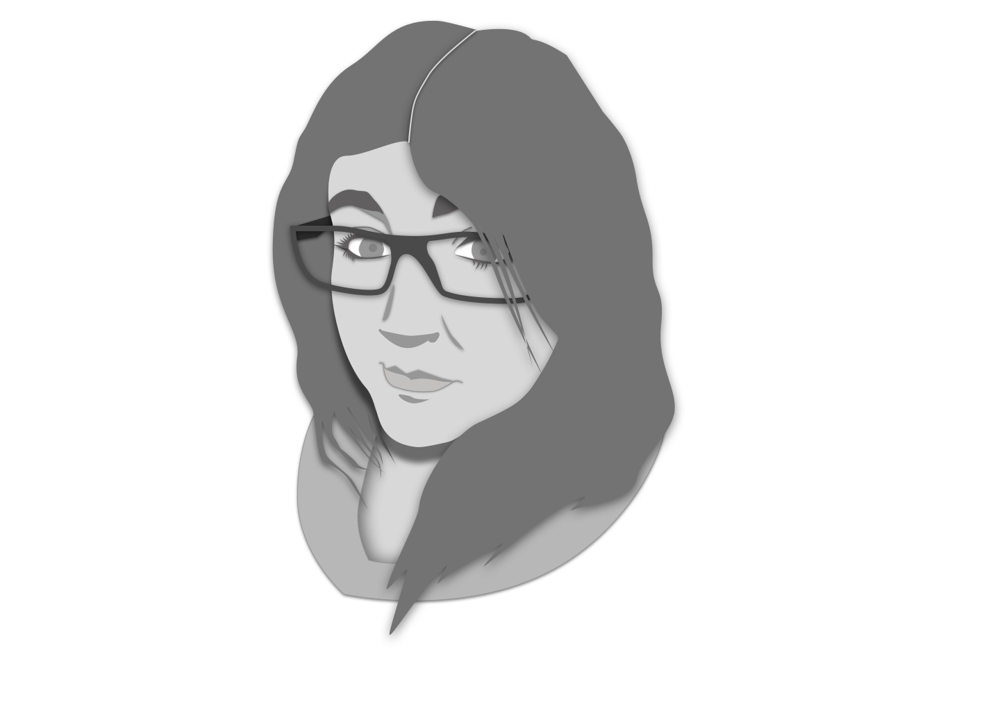

I have known my whole life that I can draw a picture and balance a check book but I didn’t know that it would lead me to where I am today. I am a fun, energetic, problem-solving user experience designer with a background in finance and illustration. I
use ethnography to understand people and how they interact with the digital world, I sketch to generate and communicate ideas that offer different ways to relieve stress for users, and I can build wireframes to create a structure of stability and
understanding, translating ideas into solutions.